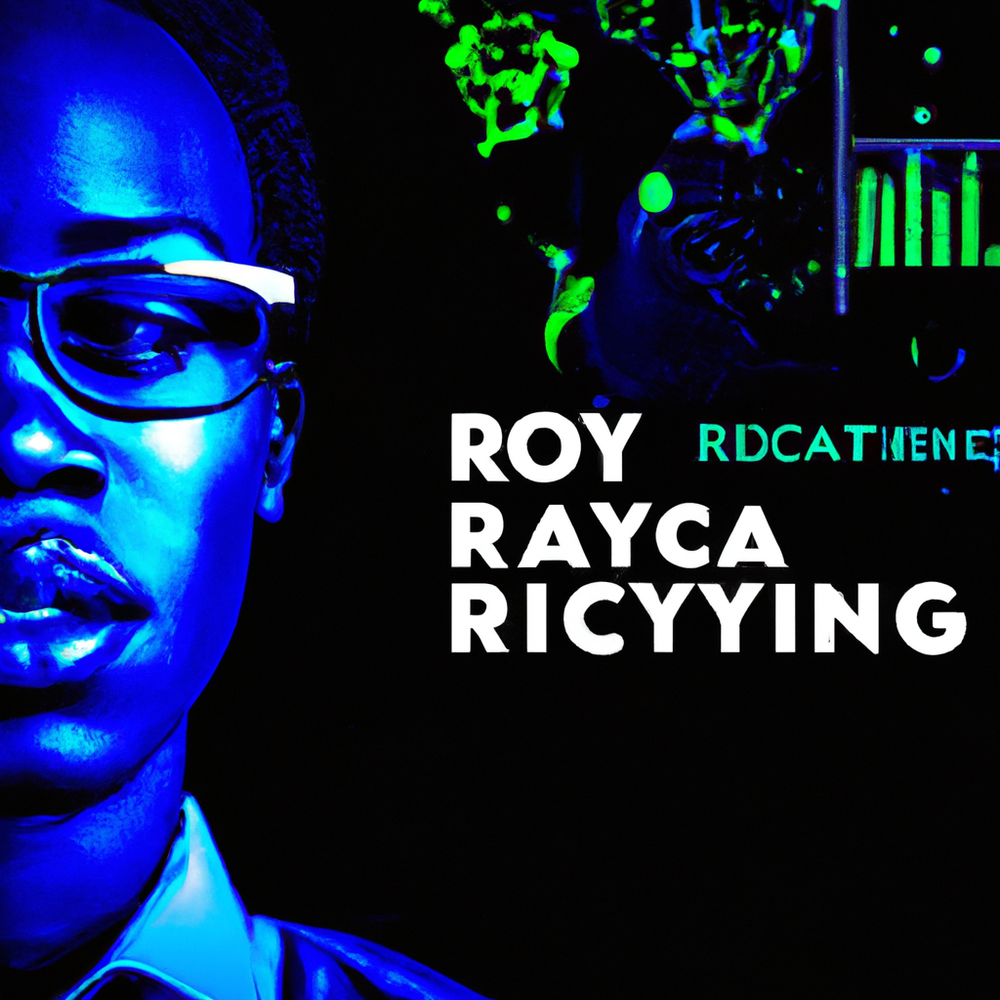

Why companies should consider Royal Mcgrady Data Science for their business
In today's rapidly evolving technological landscape, businesses are constantly seeking innovative solutions to stay ahead and remain competitive. Royal Mcgrady Data Science is a leading provider of data science and AI development services, offering a comprehensive range of solutions to help businesses future-proof their operations.
One of the key advantages of choosing Royal Mcgrady Data Science is our expertise in various areas of technology. Whether it's machine learning, AI, Python programming, analytics, or cloud integration, our team of highly skilled professionals has the knowledge and experience to deliver top-notch solutions. By offering a one-stop shop for all these services, we save businesses the hassle of working with multiple vendors and ensure seamless integration of different technologies.
Another reason why companies should consider Royal Mcgrady Data Science is our commitment to staying at the forefront of technological advancements. Our team constantly keeps up with the latest trends and developments in the field of data science and AI, ensuring that our clients benefit from cutting-edge solutions. By partnering with us, businesses can leverage the power of emerging technologies to gain a competitive edge in their respective industries.
Furthermore, Royal Mcgrady Data Science understands the importance of scalability and flexibility in today's business environment. We offer scalable solutions that can grow with your business, allowing for easy expansion and adaptation to changing needs. Whether you're a small startup or a large enterprise, our services can be tailored to meet your specific requirements.
Lastly, Royal Mcgrady Data Science is dedicated to providing exceptional customer service. We believe in building long-term relationships with our clients, and our team is always available to provide support and assistance. From the initial consultation to the implementation and ongoing maintenance of our solutions, we strive to exceed our clients' expectations and ensure their satisfaction.
In conclusion, Royal Mcgrady Data Science is the ideal partner for businesses looking to embrace the power of technology and data science. With our expertise in tech, machine learning, AI, Python, analytics, and cloud integration, we offer comprehensive solutions that can future-proof organizations. By choosing us, businesses can stay ahead of the curve, drive innovation, and achieve their goals in today's data-driven world.